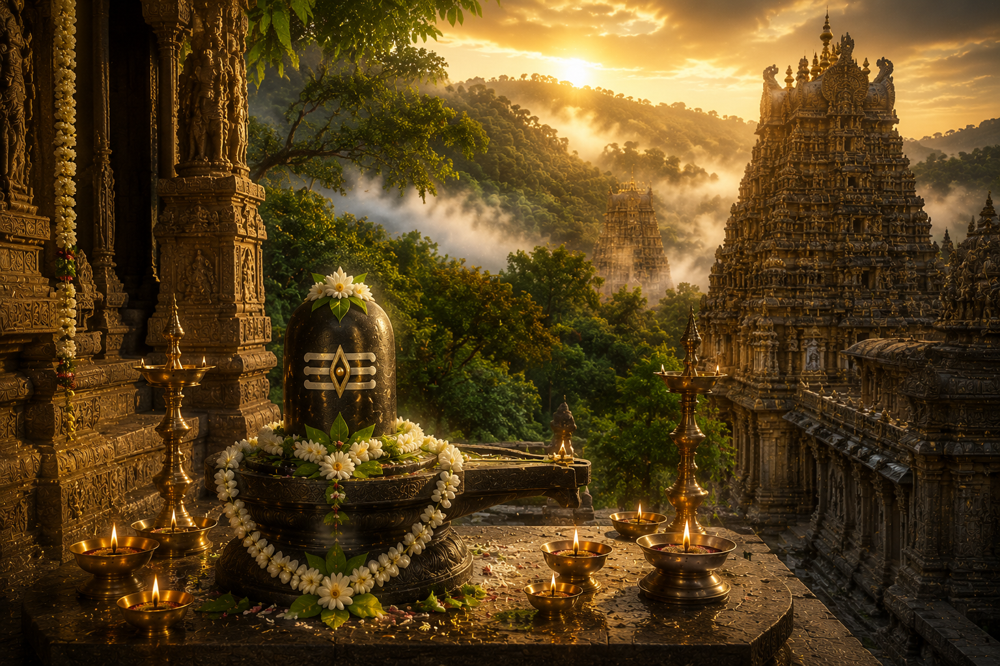

శ్రీ మల్లికార్జున జ్యోతిర్లింగ దేవాలయం
భారతీయ సనాతన ధర్మ పుణ్యక్షేత్రం

౧. పరిచయం
నల్లమల అడవుల మధ్య కృష్ణానది తీరాన ఆంధ్రప్రదేశ్లోని శ్రీశైలంలో వెలసిన శ్రీ మల్లికార్జున స్వామి దేవాలయం ద్వాదశ జ్యోతిర్లింగాలలో రెండవది. ఇదే క్షేత్రంలో శ్రీ భ్రమరాంబికా దేవి అష్టాదశ మహాశక్తి పీఠాలలో ఒకటిగా కొలువై ఉండడం వల్ల శైవ, శాక్త సంప్రదాయాలకు సమానంగా పవిత్రమైన క్షేత్రంగా ప్రసిద్ధి చెందింది.
౨. క్షేత్ర మహిమ
శ్రీశైలాన్ని "దక్షిణ కైలాసం", "శ్రీపర్వతం" అని పురాణాలు వర్ణించాయి.
ఈ క్షేత్రంలో శ్రీ మల్లికార్జున స్వామి, భ్రమరాంబికా దేవిని దర్శించడం వల్ల శివశక్తుల అనుగ్రహం, పాపక్షయం, ఐశ్వర్యం మరియు మోక్షప్రాప్తి కలుగుతాయని విశ్వాసం.
ఈ క్షేత్రంలో శ్రీ మల్లికార్జున స్వామి, భ్రమరాంబికా దేవిని దర్శించడం వల్ల శివశక్తుల అనుగ్రహం, పాపక్షయం, ఐశ్వర్యం మరియు మోక్షప్రాప్తి కలుగుతాయని విశ్వాసం.
౩. మల్లికార్జున జ్యోతిర్లింగ ఆవిర్భావం – పురాణ నేపథ్యం
ఒకసారి గణేశుడు, కుమారస్వామి ఇద్దరిలో ముందుగా ఎవరి వివాహం జరపాలనే సందేహం కలిగింది. ప్రపంచాన్ని ముందుగా ప్రదక్షిణ చేసిన వారికి వివాహం చేస్తామని శివపార్వతులు చెప్పారు.
కుమారస్వామి తన నెమలివాహనంపై ప్రపంచ యాత్రకు బయలుదేరగా, గణేశుడు తన తల్లిదండ్రులనే ప్రపంచంగా భావించి వారికి మూడు ప్రదక్షిణలు చేశాడు. శివపార్వతులు సంతోషించి ముందుగా గణేశుని వివాహం జరిపించారు.
ఈ విషయం తెలుసుకున్న కుమారస్వామి మనస్తాపంతో క్రౌంచ పర్వతానికి వెళ్లిపోయాడు. కుమారుని కోసం శివపార్వతులు అక్కడికి వచ్చి ఆయనకు సమీపంలోనే శాశ్వతంగా నివసించాలనే సంకల్పంతో జ్యోతిర్లింగ రూపంలో వెలిశారు.
మల్లెపూలతో ఆరాధింపబడే అర్జునుడు (శివుడు) కావడంతో మల్లికార్జునుడు అనే పేరు ఏర్పడింది.
కుమారస్వామి తన నెమలివాహనంపై ప్రపంచ యాత్రకు బయలుదేరగా, గణేశుడు తన తల్లిదండ్రులనే ప్రపంచంగా భావించి వారికి మూడు ప్రదక్షిణలు చేశాడు. శివపార్వతులు సంతోషించి ముందుగా గణేశుని వివాహం జరిపించారు.
ఈ విషయం తెలుసుకున్న కుమారస్వామి మనస్తాపంతో క్రౌంచ పర్వతానికి వెళ్లిపోయాడు. కుమారుని కోసం శివపార్వతులు అక్కడికి వచ్చి ఆయనకు సమీపంలోనే శాశ్వతంగా నివసించాలనే సంకల్పంతో జ్యోతిర్లింగ రూపంలో వెలిశారు.
మల్లెపూలతో ఆరాధింపబడే అర్జునుడు (శివుడు) కావడంతో మల్లికార్జునుడు అనే పేరు ఏర్పడింది.
౪. ఆలయ చరిత్ర
శ్రీశైలం వేల సంవత్సరాల చరిత్ర కలిగిన ప్రాచీన క్షేత్రం. మహాభారతం, శివ పురాణం, స్కాంద పురాణం మరియు అనేక శాసనాలలో ఈ క్షేత్ర ప్రస్తావన కనిపిస్తుంది.
శాతవాహనులు, ఇక్ష్వాకులు, చాళుక్యులు, కాకతీయులు, రెడ్డి రాజులు మరియు విజయనగర రాజులు ఆలయ అభివృద్ధికి విశేష సేవలు అందించారు.
శాతవాహనులు, ఇక్ష్వాకులు, చాళుక్యులు, కాకతీయులు, రెడ్డి రాజులు మరియు విజయనగర రాజులు ఆలయ అభివృద్ధికి విశేష సేవలు అందించారు.
౫. ఆలయ నిర్మాణ విశేషాలు
ద్రావిడ శిల్పకళా శైలిలో నిర్మించబడింది.
విశాలమైన ప్రాకారాలు, గోపురాలు భక్తులను ఆకట్టుకుంటాయి.
గర్భగుడిలో శ్రీ మల్లికార్జున స్వామి జ్యోతిర్లింగ రూపంలో కొలువై ఉన్నారు.
శ్రీ భ్రమరాంబికా దేవి ఆలయం ప్రధాన ఆలయానికి సమీపంలోనే ఉంది.
ఆలయ గోడలపై అద్భుత శిల్పాలు, శాసనాలు చెక్కబడ్డాయి.
విశాలమైన ప్రాకారాలు, గోపురాలు భక్తులను ఆకట్టుకుంటాయి.
గర్భగుడిలో శ్రీ మల్లికార్జున స్వామి జ్యోతిర్లింగ రూపంలో కొలువై ఉన్నారు.
శ్రీ భ్రమరాంబికా దేవి ఆలయం ప్రధాన ఆలయానికి సమీపంలోనే ఉంది.
ఆలయ గోడలపై అద్భుత శిల్పాలు, శాసనాలు చెక్కబడ్డాయి.
౬. ముఖ్య దర్శనీయ స్థలాలు
శ్రీ మల్లికార్జున జ్యోతిర్లింగం
శ్రీ భ్రమరాంబికా అమ్మవారి ఆలయం
పాతాళగంగ
సాక్షి గణపతి
శిఖరేశ్వరం
పాలధార – పంచధార
అక్కమహాదేవి గుహలు
హటకేశ్వరం
శ్రీ భ్రమరాంబికా అమ్మవారి ఆలయం
పాతాళగంగ
సాక్షి గణపతి
శిఖరేశ్వరం
పాలధార – పంచధార
అక్కమహాదేవి గుహలు
హటకేశ్వరం
౭. నిత్య సేవలు
మహామంగళ హారతి
అభిషేకం
అర్చన
రుద్రాభిషేకం
కల్యాణోత్సవం
సహస్రనామార్చన
నిత్య అన్నదానం
అభిషేకం
అర్చన
రుద్రాభిషేకం
కల్యాణోత్సవం
సహస్రనామార్చన
నిత్య అన్నదానం
౮. ప్రధాన ఉత్సవాలు
మహా శివరాత్రి బ్రహ్మోత్సవాలు
కార్తీక మాసోత్సవాలు
ఉగాది ఉత్సవాలు
నవరాత్రి ఉత్సవాలు
శ్రావణ మాస ప్రత్యేక పూజలు
కార్తీక మాసోత్సవాలు
ఉగాది ఉత్సవాలు
నవరాత్రి ఉత్సవాలు
శ్రావణ మాస ప్రత్యేక పూజలు
౯. నేటి శ్రీశైలం
నేడు శ్రీశైలం భారతదేశంలోని అత్యంత ప్రసిద్ధ శైవ పుణ్యక్షేత్రాలలో ఒకటిగా వెలుగొందుతోంది. ప్రతి సంవత్సరం లక్షలాది మంది భక్తులు స్వామివారిని దర్శించి పూజలు నిర్వహిస్తారు.
౧౦. యాత్రికులకు సమాచారం
స్థానం
శ్రీశైలం, నంద్యాల జిల్లా, ఆంధ్రప్రదేశ్.
చేరుకునే మార్గాలు
రైలుమార్గం: మార్కాపురం రోడ్ సమీప రైల్వే స్టేషన్.
విమాన మార్గం: హైదరాబాద్ మరియు విజయవాడ విమానాశ్రయాల నుండి రోడ్డు మార్గంలో చేరుకోవచ్చు.
రోడ్డు మార్గం: ఆంధ్రప్రదేశ్, తెలంగాణ రాష్ట్రాల నుండి ప్రభుత్వ మరియు ప్రైవేటు బస్సుల సౌకర్యం అందుబాటులో ఉంది.
శ్రీశైలం, నంద్యాల జిల్లా, ఆంధ్రప్రదేశ్.
చేరుకునే మార్గాలు
రైలుమార్గం: మార్కాపురం రోడ్ సమీప రైల్వే స్టేషన్.
విమాన మార్గం: హైదరాబాద్ మరియు విజయవాడ విమానాశ్రయాల నుండి రోడ్డు మార్గంలో చేరుకోవచ్చు.
రోడ్డు మార్గం: ఆంధ్రప్రదేశ్, తెలంగాణ రాష్ట్రాల నుండి ప్రభుత్వ మరియు ప్రైవేటు బస్సుల సౌకర్యం అందుబాటులో ఉంది.
౧౧. దర్శనం మరియు సేవల నమోదు
అధికారిక వెబ్సైట్
https://www.srisailadevasthanam.org
అందుబాటులో ఉన్న సేవలు
దర్శన టికెట్లు
సేవల నమోదు
వసతి బుకింగ్
ప్రసాదాల సమాచారం
దాన సేవలు
ఉత్సవాల వివరాలు
https://www.srisailadevasthanam.org
అందుబాటులో ఉన్న సేవలు
దర్శన టికెట్లు
సేవల నమోదు
వసతి బుకింగ్
ప్రసాదాల సమాచారం
దాన సేవలు
ఉత్సవాల వివరాలు
౧౨. ఆసక్తికర విషయాలు
ద్వాదశ జ్యోతిర్లింగాలలో రెండవ జ్యోతిర్లింగం.
అష్టాదశ మహాశక్తి పీఠాలలో శ్రీ భ్రమరాంబికా దేవి ఆలయం ఇక్కడే ఉంది.
ఒకే క్షేత్రంలో జ్యోతిర్లింగం మరియు మహాశక్తి పీఠం ఉన్న అరుదైన పుణ్యక్షేత్రం.
శ్రీశైలాన్ని దక్షిణ కైలాసం అని పిలుస్తారు.
నల్లమల అటవీ ప్రాంతంలో ఉన్న ఈ క్షేత్రం ప్రకృతి సౌందర్యానికి ప్రసిద్ధి.
కృష్ణానదిపై ఉన్న శ్రీశైలం ఆనకట్ట కూడా ప్రముఖ పర్యాటక ఆకర్షణ.
అష్టాదశ మహాశక్తి పీఠాలలో శ్రీ భ్రమరాంబికా దేవి ఆలయం ఇక్కడే ఉంది.
ఒకే క్షేత్రంలో జ్యోతిర్లింగం మరియు మహాశక్తి పీఠం ఉన్న అరుదైన పుణ్యక్షేత్రం.
శ్రీశైలాన్ని దక్షిణ కైలాసం అని పిలుస్తారు.
నల్లమల అటవీ ప్రాంతంలో ఉన్న ఈ క్షేత్రం ప్రకృతి సౌందర్యానికి ప్రసిద్ధి.
కృష్ణానదిపై ఉన్న శ్రీశైలం ఆనకట్ట కూడా ప్రముఖ పర్యాటక ఆకర్షణ.
౧౩. ఆధారాలు
గ్రంథ ఆధారాలు
శివ పురాణం
స్కాంద పురాణం – శ్రీశైల ఖండం
లింగ పురాణం
మహాభారతం
అధికారిక ఆధారాలు
శ్రీశైలం దేవస్థానం ప్రచురణలు
శ్రీశైలం దేవస్థానం అధికారిక వెబ్సైట్
శివ పురాణం
స్కాంద పురాణం – శ్రీశైల ఖండం
లింగ పురాణం
మహాభారతం
అధికారిక ఆధారాలు
శ్రీశైలం దేవస్థానం ప్రచురణలు
శ్రీశైలం దేవస్థానం అధికారిక వెబ్సైట్
౧౪. ముగింపు
శ్రీ మల్లికార్జున జ్యోతిర్లింగం భక్తి, శివశక్తుల ఏకత్వం మరియు భారతీయ ఆధ్యాత్మిక సంప్రదాయానికి ప్రతీకగా నిలిచిన మహాపుణ్యక్షేత్రం. శ్రీ మల్లికార్జున స్వామి, శ్రీ భ్రమరాంబికా అమ్మవారి దర్శనం భక్తులకు ఆధ్యాత్మిక ప్రశాంతతను, దైవానుగ్రహాన్ని ప్రసాదిస్తుందని విశ్వాసం.
"శివశక్తులు ఏకమై వెలసిన శ్రీశైలం, భక్తుల హృదయాలలో నిత్యం వెలిగే దివ్య క్షేత్రం."
"శివశక్తులు ఏకమై వెలసిన శ్రీశైలం, భక్తుల హృదయాలలో నిత్యం వెలిగే దివ్య క్షేత్రం."
✦ సర్వే జనాః సుఖినో భవంతు ✦